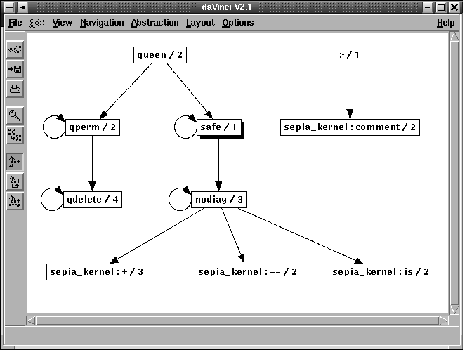

Next: Pretty Printer Tool
Up: Development Support Tools
Previous: Document Generation Tools
Index
The cross referencing library xref analyses an ECLiPSe source
module or file and builds its predicate call graph. The graph can either
be returned in the format of lib(graph_algorithms), as text, or
as a graphical display.
The xref/2 predicate generates
a call graph for the file File according to the Options
list. The options specify the format of the graph to be generated, whether
calls to built in predicates are displayed and whether it is a caller
or callee graph:
?- xref:xref(queen, []).
nodiag / 3 calls:
nodiag / 3
qdelete / 4 calls:
qdelete / 4
qperm / 2 calls:
qdelete / 4
qperm / 2
queen / 2 calls:
qperm / 2
safe / 1
safe / 1 calls:
nodiag / 3
safe / 1
Yes (0.01s cpu)
?- xref:xref(queen,[builtins:on,output:daVinci]).
WARNING: module 'daVinci' does not exist, loading library...
daVinci.ecl compiled traceable 5644 bytes in 0.01 seconds
The first xref predicate call generates a textual call graph
for the queen module, while the second generates the
daVinci graph illustrated in figure 15.1.
Figure 15.1:
Call graph for queen example with built-in predicates
|

|
Warwick Harvey
2005-01-25